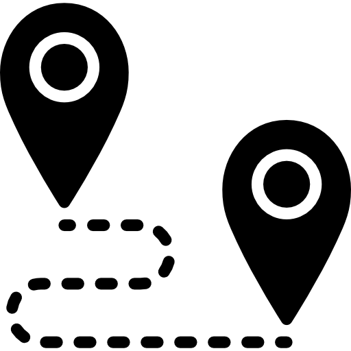

Organizar una rutaRuteo es una plataforma diseñada para organizar y descubrir rutas gastronómicas y concursos culinarios de forma sencilla e interactiva. Permite que restaurantes participen con sus mejores platos, que organizadores creen eventos gastronómicos y que los usuarios puedan recorrer los locales, probar las propuestas y valorar su experiencia. Una forma innovadora de descubrir la gastronomía de una ciudad.
Organizadores o entidades pueden crear eventos gastronómicos:
Rutas de tapas
Concursos culinarios
Festivales culinarios
Semanas gastronómicas
Los restaurantes pueden:
Inscribirse en la ruta gastronómica
Ser invitados por los organizadores
Presentar su plato o tapa del concurso
Cada restaurante cuenta con su perfil dentro del evento donde muestra su propuesta
gastronómica.
Explora rutas, planifica tu recorrido, valora los mejores platos y comparte tu opinión con la
comunidad.
Valorar el plato
Dejar una opinión
Descubrir los platos mejor puntuados